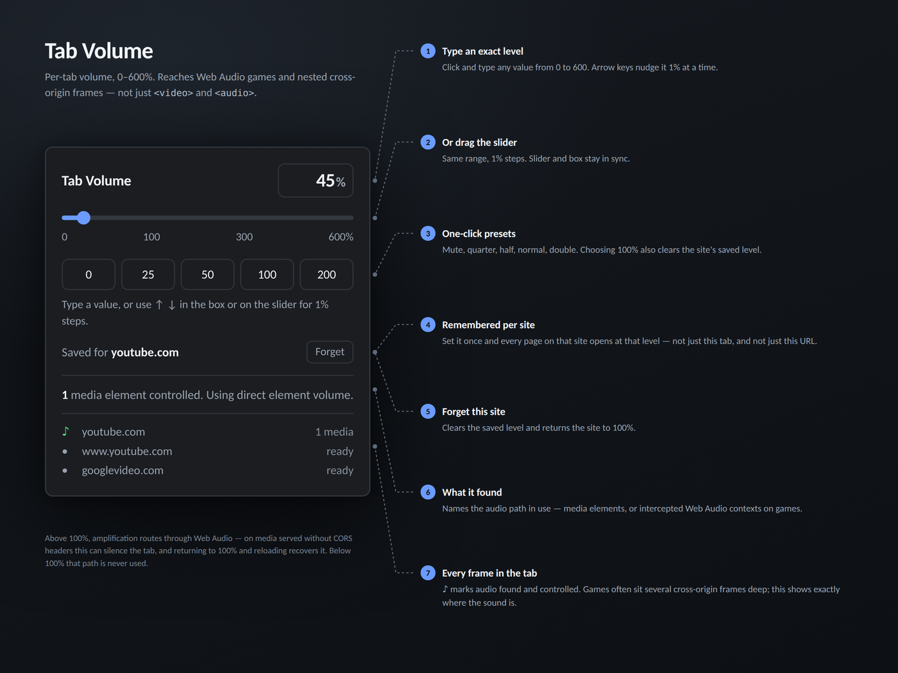
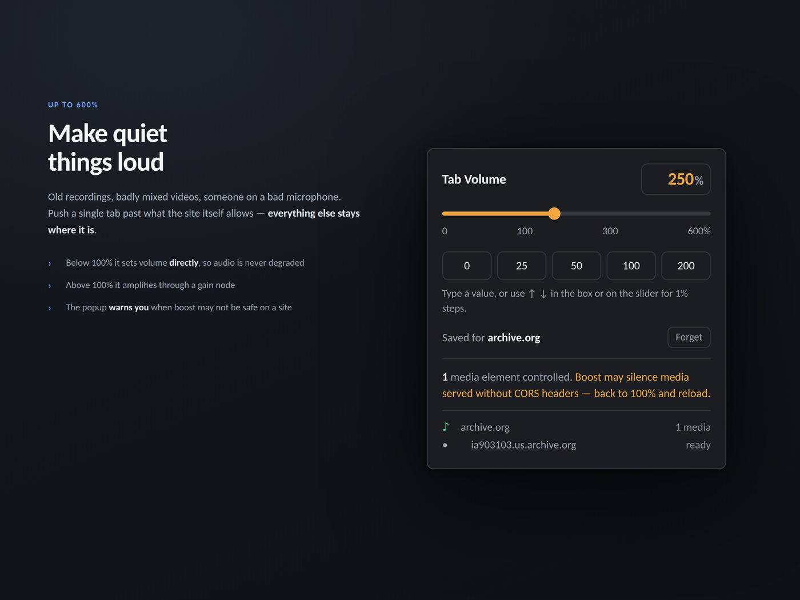
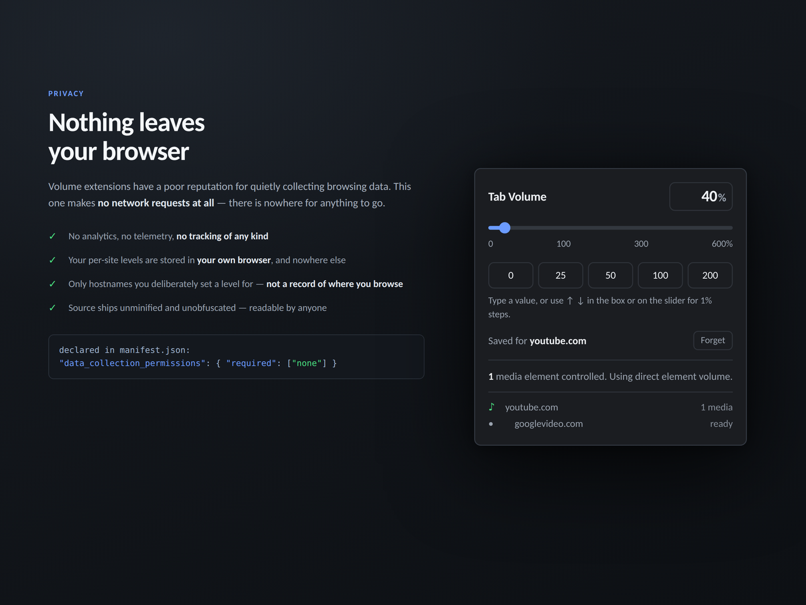

Per-tab volume for Firefox, from silence to 600%.
Firefox can mute a tab. It can't turn one down. Gainshift gives you the level in between — drop a noisy tab to 25% and leave everything else alone, or push a quiet one up to 600%.

Most volume extensions go looking for <video> and
<audio> tags. That is fine on YouTube. It fails on a
surprising amount of the web, because plenty of pages make sound without ever
creating one: browser games, emulators and custom players push audio straight
through the Web Audio API, or through Audio objects built in
JavaScript and never added to the page at all. On those, a DOM-scanning
extension reports "no audio found" while the page is plainly making noise.
Gainshift works in three places instead:
Audio objects, created in code and never insertedIt also follows audio into nested cross-origin frames, so a game embedded three or four iframes deep inside a page still answers.
These are two different mechanisms, and the difference explains the one real limitation.
Below 100%, media elements are turned down through their own
volume property and Web Audio is scaled in the graph. Both are
exact multiplications. No media element is re-routed, nothing is re-encoded,
nothing is degraded.
Above 100% there is no such shortcut: to make an element louder than its own maximum, the audio has to be routed through Web Audio and amplified.

No network requests of any kind. Nothing is collected, nothing is transmitted, and there is no analytics, telemetry or server. Local storage holds the hostnames you chose a level for and the number you chose — nothing else, and it never leaves your browser.

There is no compilation step — the .xpi is fifteen files in a
zip. The build is deterministic, so a clean checkout reproduces the published
file byte for byte:
git clone https://github.com/MarshallPascal/gainshift
cd gainshift/src
./build.sh --verify path/to/gainshift.xpi
That prints IDENTICAL (byte for byte). The source ships with 148
tests and no dependencies — ./build.sh --test runs them.